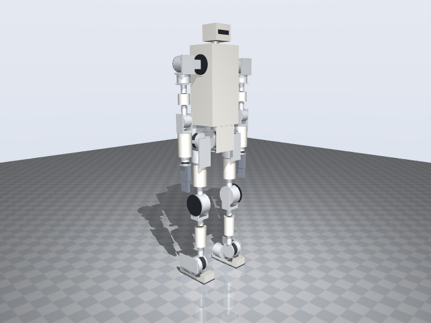
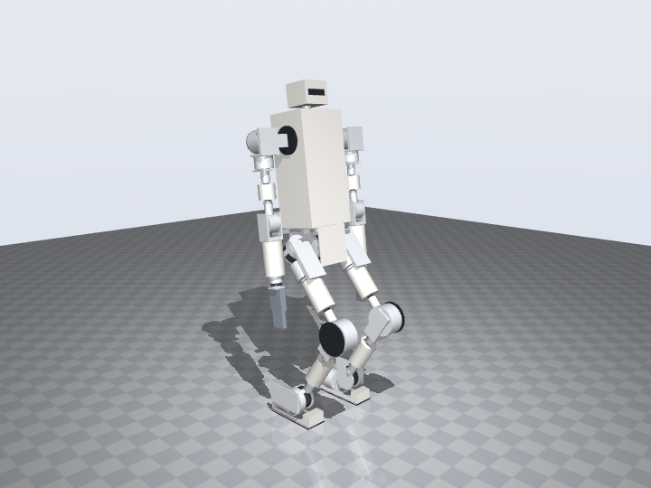
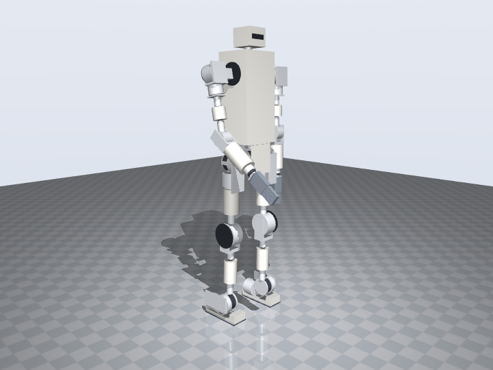

The aesthetic variant: v1a work in progress
The production design in a body. Printed PLA shells over the tubes, the joint cups, the torso frame, the pelvis and the head, so the robot reads as one continuous figure the way Unitree G1 and ROBOTIS AI Sapiens do. Nothing structural moves: every actuator, tube, plate and screw is v1's.
Design language: what we borrowed, and from whom
Both reference robots hide a skeleton much like ours (actuators at the joints, structure between them) under shells that do three things: they taper each limb so the eye reads a leg instead of a tube with lumps, they make the joints read as round discs, and they keep to two tones so the body stays one object. Their published models, loaded from the AI Sapiens description (Apache-2.0) and unitree_ros (BSD-3-Clause), stand beside our model at true scale below.
Tapered limbs
G1's thigh and shank are single tapered shells; AI Sapiens' legs the same with a softer line. Ours: four conical shells, thigh Ø92 → Ø80 and shank Ø80 → Ø72, each ending a few millimetres short of the cup at either end so the cup's own ring reads as the joint. Upper arm and forearm the same in Ø72 and Ø88.
Joints as discs
G1 leaves the knee actuator visible as a dark disc. Ours: a graphite disc on the outer shank plate over the knee coupler screws, and the same disc on the back of each shoulder-roll cup. The RobStride housings themselves are already dark cylinders; the discs give the exposed joints one face.
A body, not a frame
Both robots have a smooth torso with a chest line. Ours: a rounded shell 200 × 240 × 500 mm around the extrusion frame, 1.6 mm walls, with graphite bezels where the shoulder brackets come through, replacing the four flat polycarbonate panels of v1. A U-shaped cover closes the pelvis under the hip actuators.
Head with a visor
G1's face is a dark visor with the depth camera behind it; AI Sapiens' head is a rounded block. Ours: a rounded hollow head 120 × 130 × 100 mm on the v1 neck post, the RealSense moved 6 mm back behind a graphite visor strip with a camera window.
Shoes
G1's feet are low shells. Ours sit on the aluminium foot plate: a rounded toe cap, two rails along the plate edges and a heel cap. The two ankle actuators stay visible between them; a full shoe would need them moved up, which is a mechanical change, not a cover.
Two tones
Warm white PLA for the shells; graphite PLA for the discs, bezels and visor; the actuators and carbon tubes stay black. Where a shell is split in two to go around a link, the halves meet along the sides and hold with Ø8 magnets in printed pockets, so every cover comes off without tools.
What changes against v1
Twelve cover part types are added and four parts are removed (the three polycarbonate torso panels and the boxy head shell). The table is read from the generated model; masses are from the shell volumes at 1.24 g/cm³.
| Cover | Qty | Colour | Mass g (each) | Envelope mm | Where it sits and how it is held |
|---|
Fitting the covers around moving parts
A cover is only an improvement if the robot still moves. Each shell was placed against the swept volume of its neighbours, not against the zero pose, and the audit below confirms it. The cases that set the dimensions:
- Pelvis cover. The hip-yaw cups (Ø112) reach 84 mm from the centre line at the zero pose and 67 mm when a leg adducts the full 12°, so the bottom panel is 128 mm wide while the front and back panels are 164 mm; the bottom sits 4 mm under the hip-pitch mount rings.
- Shoes. The ankle-pitch actuator hangs 42 mm above the foot plate and the ankle bracket plate sweeps down to 39 mm above it at 30° of roll, so the toe cap starts 58 mm in front of the pitch axis and the rails are 13 mm tall. The heel cap stops 2.5 mm behind the ankle-roll back plate.
- Forearm cover. Ends 1 mm under the elbow yoke's cross member and clears the elbow cup by 15 mm at full flexion (125°). With the arms hanging straight it is the first thing an abducting leg's hip-yaw housing meets, from 15°; v1's bare forearm had the same coupling through the hand at 20°, and the standing pose with bent elbows avoids it in both.
- Shoulder. A drum around the shoulder-roll cup was tried and rejected: the upper-arm yoke's shelf sweeps 51 to 78 mm from the roll axis, so any drum would be Ø160. The bracket keeps a disc on the back instead and a bezel in the torso wall; the 90 mm of exposed bracket beam between them is the one place the figure still shows its frame.
- Torso shell. The shoulder bracket (corner radius 52 mm) turns inside the shell; only the beam passes through the Ø100 opening. The E-stop head comes through the back wall, the breaker moved 3 mm inboard to clear it.
Self-collision audit
Same audit as v1, on the covered model: every part pair at the zero pose, in six preset poses, and through each joint's full range in 13 steps, with tubes inside their sockets, actuators inside their cups and the parts a shell encloses declared inside it.
| Check | Result | Note |
|---|
Does it still stand? Physics check
The v1 MuJoCo check on the v1a URDF: the covers add mass to the pelvis, the limbs and the torso, the servos hold the zero pose, no balance controller. The limit in v1 came from the arms swinging into the thighs after a 12 N·s push; with the shells' mass the figure settles at a larger lean but stays up.



| Test | What happens | Max tilt | Settled tilt | Busiest leg joint | Result |
|---|
python3 tools/build_v1a.py # robot_v1a.json, bom_v1a.json, foh_v1_0a.urdf (runs build_v1.py first)
python3 tools/check_collisions.py --model v1a --poses --sweep --steps 13
tools/.venv/bin/python tools/build_parts.py --model v1a # assets/print_v1a/*.stl + manifest
tools/.venv/bin/python tools/sim_stand.py --model v1a --render # sim_results_v1a.json, framesPrinting the shells
The shells print in PLA with 1.6 or 2 mm walls (four or five perimeters, no infill), standing on their open end, no supports. The torso shell is larger than any bed and is meant to print as eight panels with lap joints and magnet pockets; the STL below is the one-piece envelope until that split is drawn. The v1 cups, sockets and brackets are in the same set, unchanged.
| Part | Qty | Material | Mass g | Envelope mm |
|---|
Bill of materials
Priced , US vendors, against the v1 sections. The full list with vendors and notes is on the BOM page.
| Section | Covers | v1a | v1 |
|---|
What the aesthetic variant still needs
- Sculpted surfaces. Loft each cover into the cup it meets (today the covers stop a few millimetres short of the cups, on purpose, because a cone cannot blend into a ring). This is CAD work on the exported STLs or a surface stage in the generator.
- Split lines and pockets. Every two-piece cover needs its parting plane, lips and Ø8 × 3 magnet pockets in the STL; the torso shell needs its eight panels and lap joints.
- The shoulder gap. A bridging cover between the torso bezel and the shoulder-roll disc, sized against the full roll range (the shelf sweep above), is the piece that would most change the silhouette.
- Hip stack. The roll bracket and yaw housing between the pelvis and the thigh are bare; a cover there has to clear the pelvis cover through 12 to 45° of roll and −90 to 100° of pitch.
- Camera window and visor. Tinted acrylic in place of the printed strip, and a check that the RealSense's field of view clears the window edges.
- Weigh and colour-test the first shells. The masses above are volumes at nominal density; printed walls come out heavier. Test the warm white and graphite PLA together under daylight before committing.
- Everything on the production page's list still applies; the covers do not change the joint-kit test, the tube test or the walking policy.